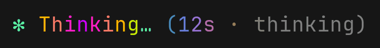
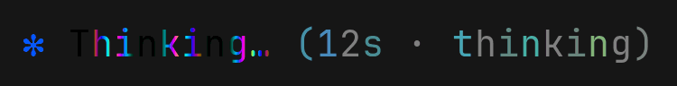
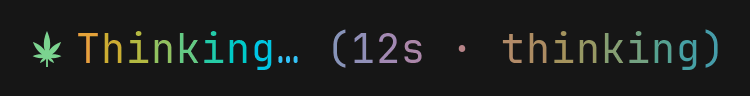
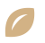
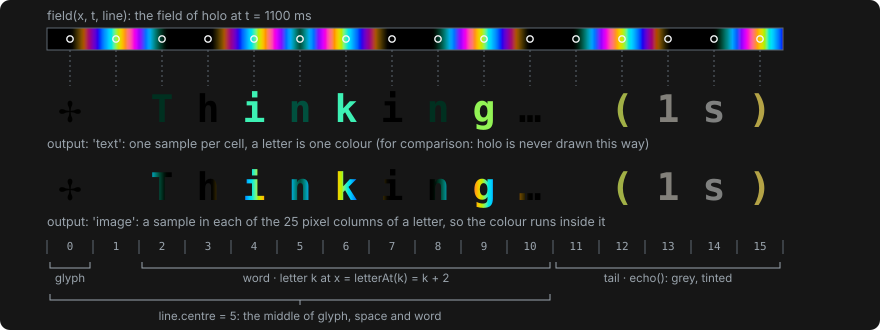

Claude Code mod · Wizard1209/rainbow-spinner
rainbow-spinner architecture
A style is a colour field over Claude Code's spinner line, the working indicator under the chat, field(x, t, line) → [r, g, b], with an optional glyph of its own before the word. The clock, the pictures, the fallback to text and the stored choice are shared, so styles are written independently of each other.



/spinner switches between these and off, the default, which leaves the line to Claude Code.Layers
Imports point one way. styles/ and core/ import nothing from Claude Code, so both are tested as plain functions.
The style contract
A style draws nothing: the core samples its field, as text or as a picture of the word.
// hooks/core/style.ts type Field = (x: number, t: number, line: Line) => Rgb // the middle of glyph, space and word type Line = { centre: number } type Style = { // what /spinner takes tag: string // image: the word as a picture output: 'text' | 'image' // milliseconds between frames frameMs: number // the field repeats: the word's pictures // are made for one loop and kept loopMs?: number field: Field // absent: the core's star glyph?: (t: number) => Glyph // glyph() names Nerd Font icons nerdGlyph?: boolean // the glyph as a picture, two cells wide sprite?: (t: number) => Rgba }

seedU+F0E62500 msbloom: glyph names each stage's Nerd Font codepoint, sprite is a 50 × 48 px picture of the same icon.
holo are about two letters wide, so it sets output: 'image'.What the terminal can show
Two questions decide how a style is drawn: does the terminal show pictures, and does it draw the plant's icons. check answers for the line, the /spinner reply and the reply box alike, so the three agree.
temper. Two reasons carry an ask, what to ask Claude for: on iTerm2's main screen (Claude Code's classic renderer), to turn on fullscreen mode; in WezTerm without the mod's WezTerm module, to set it up.| Terminal | pictures | nerdGlyphs | holo draws | bloom draws |
|---|---|---|---|---|
| kitty, Ghostty* | yes | yes | the word as a picture | the plant as a font icon |
| iTerm2, fullscreen mode | yes | yes with a Nerd Font in the profile | the word as a picture | the plant as a font icon, or as a picture |
| iTerm2, main screen | no, with an ask | yes with a Nerd Font in the profile | temper; the reply is a box | the plant as a font icon, or temper and a box |
| WezTerm | yes with the mod's WezTerm module, else no, with an ask | yes | the word as a picture, placed by the module; without it temper, and the reply is a box | the plant as a font icon |
| Windows Terminal*, Terminal.app* | no | no | temper | temper |
| tmux*, any other terminal* | unknown | no; in tmux, as the kitty or iTerm2 around it | pictures are tried; after three refusals in a row with none taken, as where pictures is no | |
A frame
spinner.tsx answers each render of the line with a client component: code the engine keeps running between renders, with its own state and timer. It keeps the clock. For text it computes the colours itself; for pictures it posts the time, and the hook swaps the pictures in place. In WezTerm the hook writes one loop of the word's frames to a file and marks the word's cells, and the mod's WezTerm module places the frames.
temper, bloom with its plant as a font icon, and every line drawn as the fallback.holo outside WezTerm, and the plant of bloom where it is not a font icon. $.ui.blit replaces a picture without a redraw of the line.State
| Where | What | Lives |
|---|---|---|
$.store | style: the chosen tag | across sessions |
| the WezTerm module's folder | alive, which the module rewrites while it runs; each pane's state file (the mod's) and ack file (the module's); one PNG of frames for each of a pane's last two words | the state and ack until a minute without change while the pane is open; the PNGs stay |
$.state | imagesRefused, imagesShown: whether the terminal has refused a line's pictures, whether it has taken one | the session |
| the hooks module | shown: the plan and the last pictures of each line; wordPictures: the word's PNGs for one loop; the facts gathered about the terminal | while the module is loaded |
| the client | its clock: the start, the timer, the last frame | one Client instance |
Adding a style
One new file in hooks/styles/ and one entry in STYLES: /spinner takes the tag from there, and tests/styles.test.ts holds every registered style to the contract. tests/caps.test.ts and tests/command.test.tsx list the styles by name: add the tag there too.
// hooks/styles/tide.ts import { fromOklch } from '../core/colour' import type { Style } from '../core/style' // A wave of hue from the centre outwards. export const tide: Style = { tag: 'tide', output: 'text', frameMs: 80, field: (x, t, line) => { const d = Math.abs(x - line.centre) const h = (d * 20 - t * 0.05) % 360 const hue = h < 0 ? h + 360 : h return fromOklch(0.75, 0.12, hue) }, } // hooks/styles/index.ts import { tide } from './tide' export const STYLES: readonly Style[] = [temper, holo, bloom, tide]